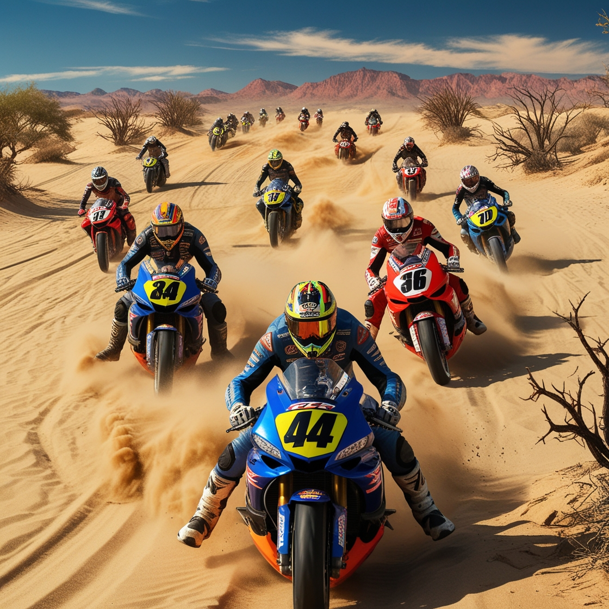

Başlık: Pin Up ile Çöl Yarışları
Pin Up'ın en son çıkardığı aksiyon dolu yarış oyunu "Moto Racing in the Desert", adrenalin severleri ve motosiklet tutkunlarını büyüleyen bir deneyim sunuyor. Çölün engin kumları üzerinde hız sınırlarını zorlayacak bu heyecan verici yarış oyunu, oyuncuları benzersiz bir yolculuğa çıkarıyor. Bu oyun, sadece bir yarış değil, aynı zamanda cesaret, strateji ve sürüş becerilerini test eden bir meydan okuma.
